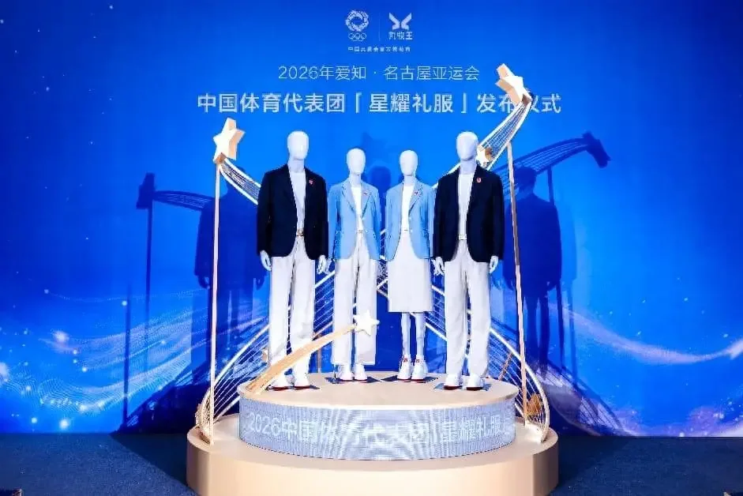
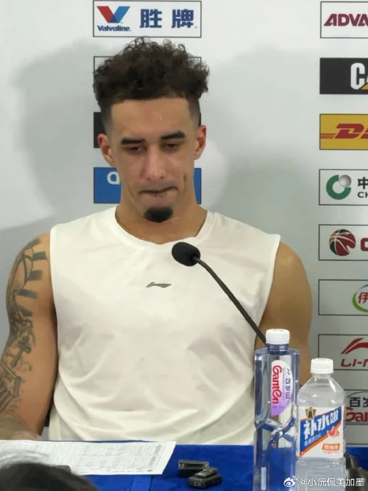
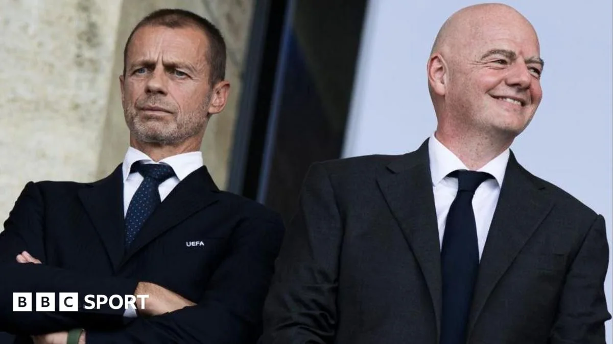
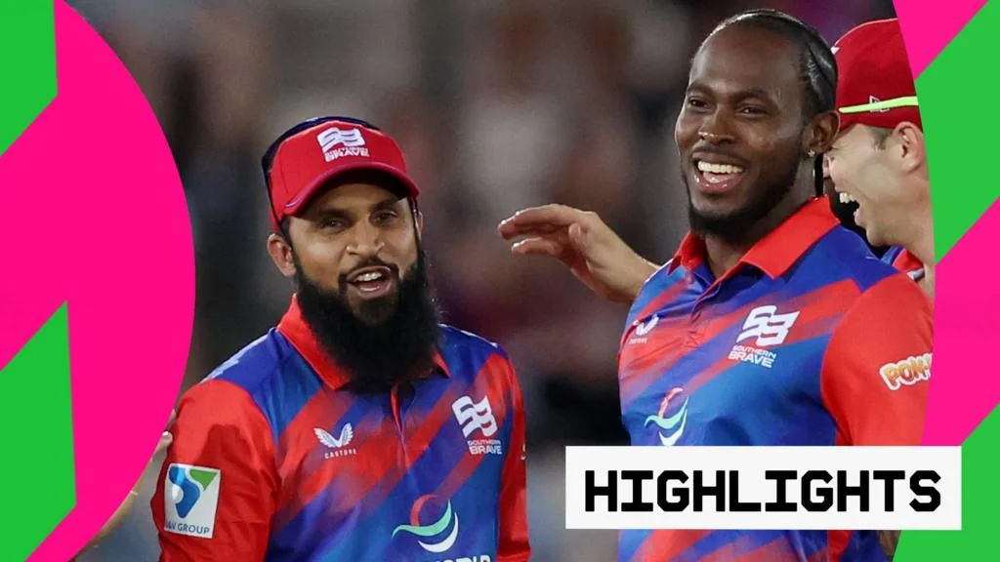

01
北京体彩公益金三年支出超32亿，钱花哪了？
2023至2025年，北京市地方留用体彩公益金支出总额突破32亿元，持续赋能首都体育。
根据北京市体育局公布的数据，2023年至2025年这三年间，北京市地方留用的体育彩票公益金支出总额超过了32亿元。这笔钱不是小数目，它来自每一位购买体育彩票的市民——每张彩票销售额中，有一定比例会作为公益金，用于支持体育事业发展。具体来说，这32亿元主要花在了几个方面：全民健身设施建设与维护，比如新建或改造社区篮球场、足球场、健身路径；青少年体育后备人才培养，包括资助体校训练、举办青少年赛事；群众性体育活动组织，比如公园半程马拉松、社区运动会；以及竞技体育支持，比如优秀运动员的训练补贴、科研保障。对于普通市民来说，最直接的感受可能是家附近多了免费或低收费的体育场地，社区里经常有体育比赛或健身指导活动。举个例子，北京很多公园里的智能健身器材、夜晚亮灯的篮球场，背后就有公益金的投入。此外，这笔资金还用于购买社会体育指导员服务，他们会在社区教大家科学锻炼。所以，你每买一张体育彩票，其实都在为身边的体育环境做贡献。未来三年，北京市计划继续加大公益金投入，重点向远郊区和农村倾斜，让更多人能方便地参与运动。如果你还没用过家附近的公共体育设施，不妨去体验一下，那可能就是公益金带来的改变。
伊恩的观察
体彩公益金取之于民、用之于民，如果你经常使用公共体育设施或参加社区体育活动，你已经在享受这笔资金带来的好处。
02
名古屋亚运会中国代表团“星耀礼服”发布
爱知·名古屋亚运会中国体育代表团礼服正式亮相，名为“星耀礼服”。

近期，本年度爱知·名古屋亚运会中国体育代表团的官方礼服——“星耀礼服”正式对外发布。这套礼服由国内知名设计师团队操刀，主色调采用中国红，象征热情与胜利；细节上融入了星空和祥云图案，寓意中国运动员在亚运赛场上如星辰般闪耀。设计兼顾了传统与现代：立领、盘扣等中式元素保留了文化底蕴，而剪裁和面料则更符合国际赛事的运动美学。礼服发布后，在社交媒体上引发了讨论。多数网友认为“大气、好看”，尤其是女款礼服的裙摆设计被称赞优雅；但也有少数声音觉得红色过于传统，希望看到更多创新。不过，对于即将出征的运动员来说，穿上这套礼服参加开幕式是一种荣誉，也是国家形象的展示。亚运会不仅是竞技比拼，也是文化交流的舞台。礼服的设计往往能体现一个国家的审美和价值观。比如，往届中国代表团的礼服曾采用“青花瓷”“龙纹”等元素，而这次“星耀”主题更强调年轻、活力与梦想。如果你关注亚运会，可以在开幕式上留意这套礼服的实际效果，看看运动员们穿上它时的精气神。此外，礼服发布也意味着亚运会筹备进入冲刺阶段，各项赛事门票、赛程等信息将陆续公布。
伊恩的观察
亚运会不仅是竞技比拼，也是文化展示。礼服设计体现了国家形象，你可以在开幕式上关注这套礼服的实际效果。
03
CBA规则成软肋！广东男篮核心奎因或遭俄超全额挖角
广东男篮核心外援奎因可能被俄罗斯超级联赛球队以全额买断方式挖走，CBA规则存在漏洞。

据新浪体育报道，广东男篮的核心外援奎因（Quinn）可能即将离队，而挖角方是俄罗斯超级联赛的一支球队。对方计划利用奎因合同中的买断条款，支付全额买断费，从而直接将他带走。CBA联赛在外援合同方面存在一个规则漏洞：如果外援合同中包含买断条款，且对方球队愿意支付全额买断费，那么CBA球队即使想留人也无能为力。目前广东男篮正在与奎因的团队紧急沟通，试图通过加薪或延长合同年限来挽留他。但俄超球队开出的条件非常优厚，据说年薪比CBA高出不少，而且俄超联赛的竞技水平也不低，对奎因有吸引力。奎因本人已经表现出离队意愿，这让广东男篮非常被动。奎因是广东男篮的进攻核心和组织者，场均得分和助攻都名列前茅。如果他离开，广东男篮的战术体系将受到严重冲击，球队可能需要紧急寻找替代外援，但赛季中期很难找到同等水平的球员。这件事也暴露了CBA在外援合同管理上的短板。相比之下，NBA有严格的合同保障和转会规则，而CBA的买断条款往往对外援有利。如果CBA想留住顶级外援，提升联赛竞争力，就需要完善规则，比如设置更高的买断费门槛，或者限制买断条款的适用范围。对于普通球迷来说，这意味着联赛的竞争格局可能发生变化——广东男篮可能从争冠热门变成中游球队，而其他球队则有机会趁势崛起。如果你支持广东男篮，可能需要做好心理准备；如果你关注CBA整体发展，可以留意后续联盟是否会修改规则。
伊恩的观察
CBA需要完善外援合同规则，防止核心球员被轻易挖角。对于普通球迷来说，这意味着联赛竞争格局可能发生变化，广东男篮需要提前准备替代方案。
04
欧足联威胁抵制FIFA赛事，因凡蒂诺面临下台危机
欧足联声明如果FIFA主席因凡蒂诺继续推进出售世界杯商业权益的计划，将抵制所有FIFA赛事。

7月30日，欧足联发布了一份重磅声明，只有11个单词，却足以震动全球足坛：“Uefa and its national associations will not participate in Fifa competitions.”（欧足联及其成员协会将不参加任何FIFA比赛。）这直接威胁到了世界杯、世俱杯等顶级赛事。导火索是FIFA主席因凡蒂诺的一项计划：他打算成立一家子公司，专门负责FIFA所有赛事的商业运营，然后出售这家子公司20%的股份给私人投资者，以此筹集资金。因凡蒂诺认为这能帮助FIFA更好地开发商业价值，但欧足联强烈反对，认为这会让FIFA被商业利益绑架，损害足球运动的公正性和独立性。欧足联的声明意味着，如果因凡蒂诺不放弃该计划，欧洲强队——比如法国、德国、意大利、西班牙、英格兰——将集体缺席世界杯。没有欧洲球队的世界杯，商业价值和关注度将大幅缩水，FIFA的收入也会断崖式下跌。目前，因凡蒂诺的处境非常危险。他原本就面临内部不满，这次欧足联的强硬态度可能成为压垮他的最后一根稻草。一些FIFA理事会成员已经开始讨论是否要发起不信任投票。如果因凡蒂诺下台，FIFA将迎来新的领导人，足球世界的权力格局可能重新洗牌。对于普通球迷来说，这件事直接影响你未来能否看到完整的世界杯。如果欧足联真的抵制，2026年世界杯（由美国、加拿大、墨西哥联合举办）可能变成“美洲杯+亚洲杯”的混合体，精彩程度大打折扣。你可以关注后续新闻，看看双方能否在谈判桌上达成妥协。
伊恩的观察
FIFA和欧足联的权力博弈直接影响世界杯的举办和赛程。作为球迷，你可能需要关注后续发展，因为任何抵制行动都会改变你观看世界杯的方式。
05
板球百球赛：南方勇士防守128分取得赛季首胜
南方勇士在百球赛中成功防守128分，击败伯明翰凤凰，取得赛季首胜。

7月31日，板球百球赛（The Hundred）迎来一场关键对决：南方勇士对阵伯明翰凤凰。南方勇士此前连续失利，排名垫底，急需一场胜利来提振士气。比赛中，南方勇士先攻，在100个球（实际是100个合法投球，每队100球）的限定回合中，他们打出了128分的总成绩。这个分数并不算高，在百球赛中属于中等偏下水平。但南方勇士的投手群在防守阶段表现出色，他们通过精准的线路和变化球路，不断给伯明翰凤凰的击球手制造麻烦。伯明翰凤凰在追分过程中始终无法找到稳定的得分节奏，关键击球手接连被淘汰出局。最终，伯明翰凤凰在100球结束后只得到122分，以6分之差惜败。南方勇士成功守住了128分，赢得赛季首胜。这场胜利的关键在于南方勇士的投手策略：他们针对伯明翰凤凰的击球弱点，重点攻击球柱上方区域，迫使对手冒险击球，从而制造出局机会。此外，南方勇士的外野手防守也非常积极，多次扑救和精准回传限制了对手的跑动得分。对于伯明翰凤凰来说，这场失利暴露了击球线的不稳定性，尤其是面对高质量投球时缺乏应对手段。百球赛是板球的一种快节奏变体，每队只有100个球，比赛通常在两个半小时内结束，非常适合新手观看。如果你对板球感兴趣，可以从百球赛入手，了解基本的得分规则和战术。南方勇士的这场胜利也提醒我们：在短格式比赛中，防守和投球同样重要，甚至比进攻更能决定胜负。
伊恩的观察
板球百球赛是一种快节奏的板球形式，适合新手观看。南方勇士的防守胜利表明，在短格式比赛中，投球和防守同样重要。如果你对板球感兴趣，可以关注后续比赛，了解不同战术的运用。
无障碍文字记录
伊恩 嘿，各位运动爱好者，欢迎收听「伊恩每日·运动」。今天是2026年7月31日，体育圈的大事真不少：北京体彩公益金三年花了32亿，名古屋亚运会中国代表团礼服亮相，CBA广东队核心可能被俄超挖走，FIFA主席因欧足联威胁抵制世界杯而陷入危机，还有The Hundred板球联赛中南方勇士队用128分低分赢球。咱们一个一个聊，中间穿插你可能会问的问题。准备好了吗？出发！
伊恩 今天聊一个数字：32亿。这是2023到2025年，北京市地方留用的体彩公益金支出总额。注意，是“地方留用”，不是全部。每卖出一张体育彩票，彩票资金里大约36%进入公益金，其中一半上缴中央，一半留给地方。北京这三年留用了32亿，平均每年超过10亿。这些钱去哪了？不是进了某个账户吃灰，而是实打实花在了你身边的体育设施和活动上。比如，你家楼下那个能测心率、显示运动时长的智能健身路径，很多就是体彩公益金资助的。还有社区篮球赛、青少年体育培训、老旧场馆翻新——甚至包括天坛、奥森公园里的健身步道。说白了，你买彩票不只是为了中奖，每一次购彩都在为全民健身买单。32亿听起来是个天文数字，但分摊到三年、覆盖到两千多万常住人口，其实每一分钱都算得很细。北京体育局每年都会公布公益金使用公告，具体到哪个区、哪个项目花了多少钱。比如2024年，东城区用公益金翻新了地坛体育馆的篮球场，海淀区则用于支持中小学生田径联赛。这笔钱最大的特点就是“取之于民，用之于民”。你可能会问：我怎么没感觉到？其实你感觉到了——当你周末在公园里用智能器材锻炼，或者带孩子参加免费的体育体验课时，背后都有它的影子。所以下次买彩票，别只想着中奖，你也在为这座城市的运动生活添砖加瓦。
听众 伊恩，体彩公益金具体怎么监督使用？会不会被挪用？
伊恩 好问题。体彩公益金实行“收支两条线”，由财政部门专户管理，体育部门申请使用，每年还要向社会公告使用情况。北京这32亿是“地方留用”部分，也就是北京自己留下的。公众可以通过官网查询项目清单。当然，任何资金都有监管风险，但体彩公益金相对透明，因为涉及公众信任。如果你感兴趣，可以搜“北京体彩公益金公告”，能看到具体项目。比如2024年，北京就公示了支持了多少个社区健身中心、多少场全民健身活动。所以，挪用风险是有的，但机制在不断完善。
伊恩 今天，搜狐报道了一件事：爱知·名古屋亚运会中国体育代表团礼服正式发布，名为“星耀”。金色和红色主调，融入星空元素，寓意中国运动员闪耀亚洲。这不是第一次了——2018年雅加达亚运会的“蓝色梦想”，2022年杭州亚运会的“星耀”系列，每次都在传统和现代之间找平衡。这次名古屋亚运会2026年9月开幕，还有两个月，礼服发布就是倒计时开始。设计师说面料用了环保科技，轻便透气，适合日本九月的湿热天气。领口和袖口有金色刺绣，象征金牌和荣誉。说实话，每次看到礼服发布，我都觉得运动员穿上那一刻，精气神就不一样了。
但你知道吗？礼服背后其实有更深的逻辑。中国体育代表团礼服不只是好看，它代表国家形象，也是体育产业的一部分。从设计、生产到发布，背后是产业链的支撑。比如这次的面料环保科技，可能来自国内纺织企业的研发，这本身就是体育产业带动其他行业的例子。而且，礼服发布往往伴随赞助商合作——比如安踏、李宁等品牌经常参与，这既是商业推广，也是品牌价值的体现。对普通人来说，你可能不会穿这样的礼服，但你可以从中看到体育如何连接时尚、科技和消费。
再说回亚运会本身。名古屋亚运会是2026年，中国代表团将参加多少项目？礼服发布后，接下来就是名单公布、集训、出征。每个环节都有成本：训练经费、装备、交通、住宿，这些钱从哪里来？一部分来自政府拨款，一部分来自企业赞助，还有体育彩票公益金。今天另一条新闻说，2023至2025年北京市体彩公益金支出突破32亿元，用于体育设施和赛事。所以，你买的那张彩票，可能就帮运动员买了件礼服。
最后，我想说，礼服是仪式感，但真正重要的是运动员的表现。两个月后，名古屋赛场上，他们穿着“星耀”礼服入场，然后换上比赛服去拼。我们普通人可能没法站上赛场，但可以学习他们的精神：准备、专注、坚持。比如你健身时，也可以给自己一个“仪式感”——换身好看的运动服，可能练起来更有劲。这就是体育融入生活的方式。
好了，今天关于礼服就聊到这儿。我是伊恩，明天见。
听众 亚运会礼服平时能买到吗？我也想穿同款。
伊恩 通常不公开售卖。这些礼服是专门为代表团定制的，数量有限，主要用于开幕式、颁奖等正式场合。不过，赞助商有时会推出“同系列”产品，比如运动外套、T恤，设计元素类似，但非完全复刻。如果你喜欢，可以关注中国体育代表团官方赞助商，比如安踏、李宁，他们可能会推出大众版。另外，亚运会结束后，部分礼服会用于展览或拍卖，但基本不会量产。所以，想穿同款有点难，但你可以买类似风格的运动服，一样有运动范儿。
伊恩 今天聊一个CBA的“暗雷”——规则太死，可能让广东队丢核心。新浪体育报道，广东男篮的小外援奎因，正被俄罗斯联赛（俄超）球队盯上，对方打算全额买断合同挖人。奎因上赛季场均得分和助攻都是队内顶梁柱，突破、组织一把抓，是广东进攻体系的发动机。但CBA对外援有严格的工资帽和合同限制，俄超没有类似约束，可以开出更高薪水。这暴露了一个问题：CBA规则成了软肋，留不住顶级外援。
先看事实：CBA工资帽的本意是控制俱乐部成本、给本土球员更多机会，这没错。但副作用是，当其他联赛用“无上限”的报价来挖人时，CBA外援很容易被撬走。奎因不是第一个，之前也有外援因为合同限制离开CBA。对广东队来说，如果奎因真走了，进攻体系要重搭——他的突破分球和关键时刻得分能力，目前队里没人能完美替代。新外援来了要磨合，至少半个赛季才能融入战术。
那普通人怎么看？如果你是球迷，可能觉得“外援走就走吧，正好练国内球员”。但现实是，CBA的观赏性和竞争力很大程度上依赖高水平外援。如果优质外援不断流失，联赛水平会下降，本土球员在高强度对抗中成长的机会也少了。对健身爱好者来说，这其实是个“规则与活力”的平衡问题：就像你制定训练计划，如果限制太多（比如只做固定动作），进步反而慢；适当灵活调整，才能持续突破。
我的判断：CBA管理层得认真思考了——工资帽可以保留，但需要增加“特殊条款”，比如允许俱乐部在核心外援被挖时匹配报价，或者设立外援保留奖金。否则，类似奎因的案例会越来越多，联赛竞争力会受影响。广东队现在很头疼，但这也是倒逼改革的机会。后续看点：俄超球队是否正式报价？CBA是否会调整规则？我们持续关注。
总之，规则是死的，人是活的。CBA想做大，就不能让规则变成软肋。
伊恩 今天我们来聊一个可能改变世界足球格局的大新闻。北京时间7月30日深夜，欧足联投下了一枚重磅炸弹：如果国际足联主席因凡蒂诺继续推进出售世界杯等赛事20%股份的计划，欧足联将抵制所有FIFA赛事。声明只有11个单词：“Uefa and its national associations will not participate in Fifa competitions。”但这句话的分量，足以让整个足球世界震动。
先来还原一下背景。因凡蒂诺的计划是成立一个FIFA的子公司，把世界杯、世俱杯等赛事的商业权注入其中，然后向外部投资者出售20%的股份。据估算，这笔交易可能为FIFA带来上百亿美元的融资。听起来像是商业上的常规操作，但欧足联为什么反应如此激烈？
关键在于控制权和利益分配。欧足联旗下拥有欧洲杯、欧冠等全球顶级赛事，是国际足球商业版图中最强大的一极。如果FIFA把世界杯的商业权卖给私人投资者，欧足联担心自己将失去对赛事未来走向的发言权，而且收益分配可能变得不透明。更根本的是，欧足联认为这违背了足球的非营利和自治原则——足球赛事不应被资本巨头左右。
那么，如果欧足联真的抵制，会发生什么？最直接的后果是：2026年世界杯可能变成“非欧世界杯”。没有欧洲球队参加的世界杯，其竞技水平、商业价值和全球关注度都将断崖式下跌。要知道，过去几届世界杯的冠军几乎全部来自欧洲，欧洲球队的缺席会让赛事名存实亡。此外，欧洲球员和教练的缺席也会让比赛失去大量看点。
目前，其他大洲足联的态度还不明朗。非洲和亚洲足联可能倾向于支持FIFA，因为因凡蒂诺在任期间加大了对这些地区的投入。但欧洲的反对声浪最大，而且欧足联的财力雄厚，完全有能力自办赛事。接下来几周将是关键：因凡蒂诺要么妥协，修改或放弃股份出售计划，要么面临下台危机。
对我们普通球迷来说，这意味着什么？首先，2026年世界杯可能不再是我们熟悉的那个盛宴。其次，足球管理的权力斗争可能进一步撕裂国际足坛，甚至催生新的赛事体系。作为观众，我们只能希望各方能找到一个平衡点，让足球回归纯粹。但无论如何，这起事件提醒我们：体育从来不只是场上的90分钟，背后的商业和政治博弈同样惊心动魄。
伊恩 今天来聊一场板球比赛，The Hundred联赛，南方勇士队主场128分战胜伯明翰凤凰队，取得赛季首胜。128分在板球里算低分，但勇士队靠防守——准确说是投球和防守配合——硬是守住了。关键节点在最后5个回合，凤凰队需要30分，但勇士队投手连续送出高质量球，让对手频频失误。这种低分防守战在板球中特别刺激，有点像篮球里防到对面只得80分。
先简单科普一下The Hundred的规则：每队投100球，投手最多连续投5球或10球，节奏快，比赛大约2.5小时，很适合入门。这场比赛，勇士队的投手杰克·利斯表现出色，他最后两个回合只丢了8分，还拿下一个关键三柱门。凤凰队的击球手则显得急躁，几次冒险击球都被接杀。最终，勇士队以8分优势获胜。
为什么128分能赢？因为板球比赛不只看总分，还要看对方得分和出局人数。勇士队虽然得分不高，但通过精准的投球和紧密的防守，限制了凤凰队的得分，同时不断制造出局。对普通观众来说，这种低分防守战反而更有悬念，每一球都可能改变局势。
对于板球新手，The Hundred是个很好的起点，因为比赛时间短，规则简单，而且每球都有悬念。你可以关注投手和击球手的对决，就像看投手和打者的博弈。下次看比赛时，留意最后几个回合的防守策略，那往往是胜负手。
伊恩 好，今天五个故事串起来，能看到体育世界的几个侧面：公益金支持大众健身、礼服提升国家队形象、联赛规则影响球员流动、国际组织权力博弈、以及小众联赛的精彩防守。其实背后都指向一个核心：规则。体彩公益金有规则确保透明，CBA有规则但可能太僵，FIFA因规则冲突面临分裂，板球联赛用简化规则吸引新观众。对我们普通人来说，参与运动时也常遇到规则问题——健身动作规范、比赛规则理解、装备选择标准。我的建议是：先搞懂规则再行动，效率更高，受伤更少。比如你跑步，了解心率区间和恢复时间，比盲目跑更有效。再比如你打篮球，知道走步和防守三秒规则，能避免很多争执。规则不是束缚，而是让运动更公平、更有趣的框架。
伊恩 今天的「伊恩每日·运动」就到这里。如果你对哪个话题有疑问，或者想听我聊什么运动，随时留言或私信。记住：运动不只是比赛，更是生活。明天见！